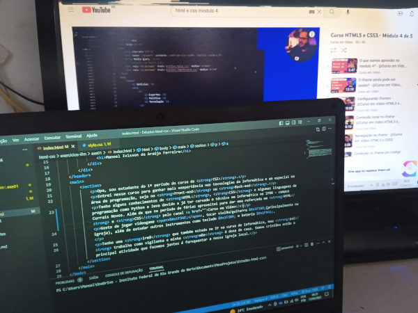
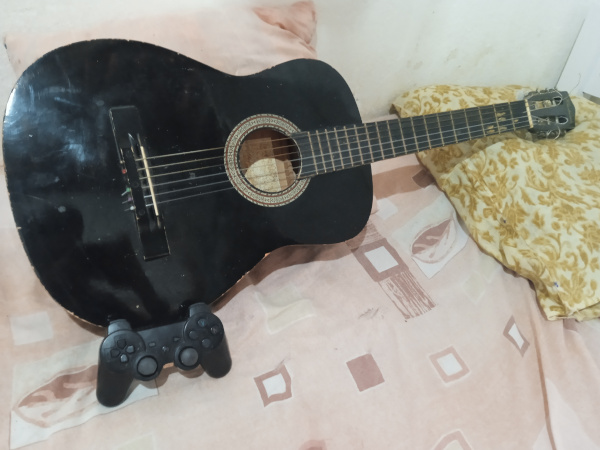
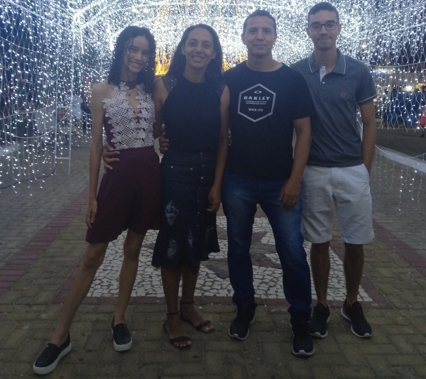

Apresentação
Opa, sou estudante do 1º período do curso de TSI.
O que quero no futuro
Entrei nesse curso para ganhar mais exeperiência nas tecnologias da informática e em especial na área de programação, seja no Front-end ou Back-end.
Conhecimento
Tenho alguns conhecimentos de HTML, CSS e algumas linguagens de programação como Python e Java devido a já ter cursado o técnico em informática no IFRN - campus Currais Novos. Além de que no período de férias aproveitei para dar uma reforçada em HTML e CSS pelo canal Curso em Vídeo🔗.
Hobbies & Curiosidades
Eu gosto de jogar videogame 🎮, entre os meus jogos favoritos estão a saga de God of War e Resident Evil, mas gosto de vários outros jogos como Crash Bandicoot, Tomb Raider, Infamous e The Last of Us. Também gosto de tocar violão/guitarra 🎸(principalmente na igreja), além de estudar outros instrumentos como a bateria 🥁, e pretendo começar a aprender em algum momento teclado 🎹.
Família
Eu e minha familia moramos em Currais Novos. Tenho uma irmã, que também estuda no IF no curso de informática, meu pai trabalha como vigilante e minha mãe é dona de casa. Somos cristãos então a principal atividade que fazemos juntos é fernquentar a nossa igreja local.
Comidas Favoritas 🍛
No domingo minha mãe geralmente faz as minhas comidas favoritas, que são:
- Lasanha
- Panqueca
- Creme de Galinha
- Arroz e Feijão